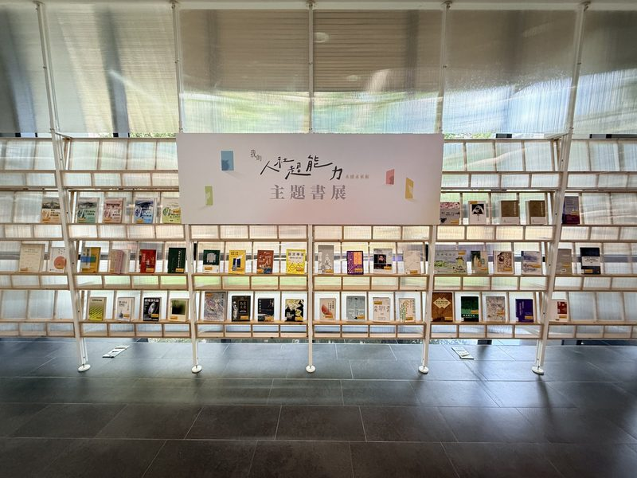
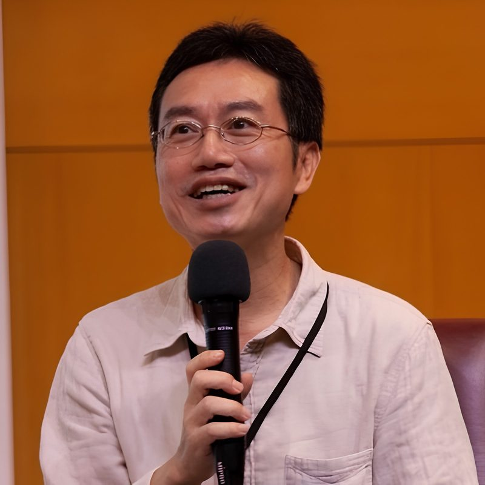

活動紀錄
BOOK EXHIBITION
主題書展

Feature Lecture
專題講座
講者
羅揚銘教授
現任國立清華大學永續學院教授，學門領域為生命科學及農學。
研究與教學專長涵蓋生態系統重建、生態永續農業、碳匯與碳信用、環境與人體健康、大地資源回收與精煉，以及食品安全體系等。
與談人

陳瑞樺教授
國立清華大學社會學研究所副教授兼所長，法國社會科學高等研究院（EHESS）社會學博士。
研究與教學專長涵蓋社區研究、社群關係、土地的文化政治、遷移的文化政治。長期深耕地方社會、文化運動與公民參與等議題。
On-site Mission
展場限定・超能力覺醒任務
發光膠卷：打造你的永續製片所
即日起於展場現場掃描QR Code參與任務，解鎖 6 道人生劇本關卡，就可獲得你的「專屬超能力角色卡」！
將測驗結果分享至圖書館 FB 貼文留言區，還可參加限量永續好禮抽獎喔！